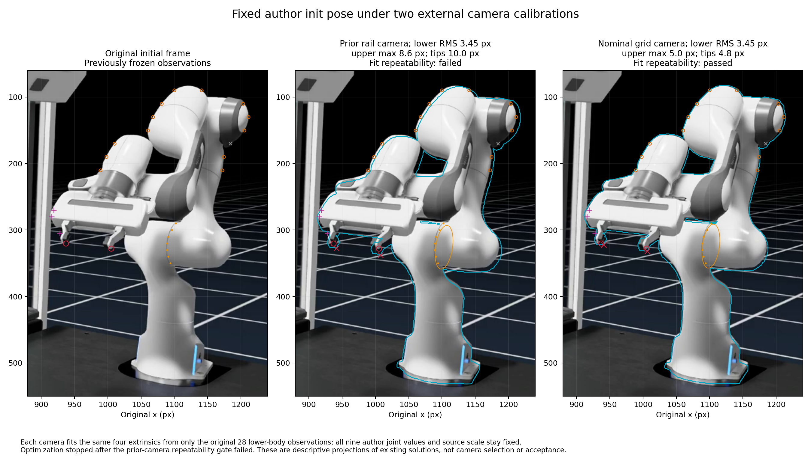
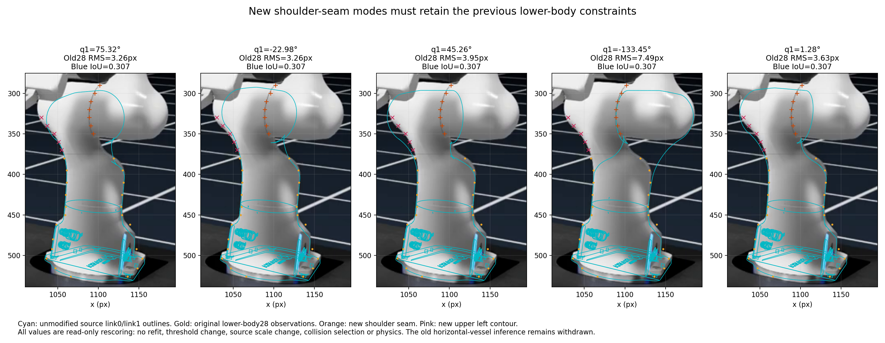
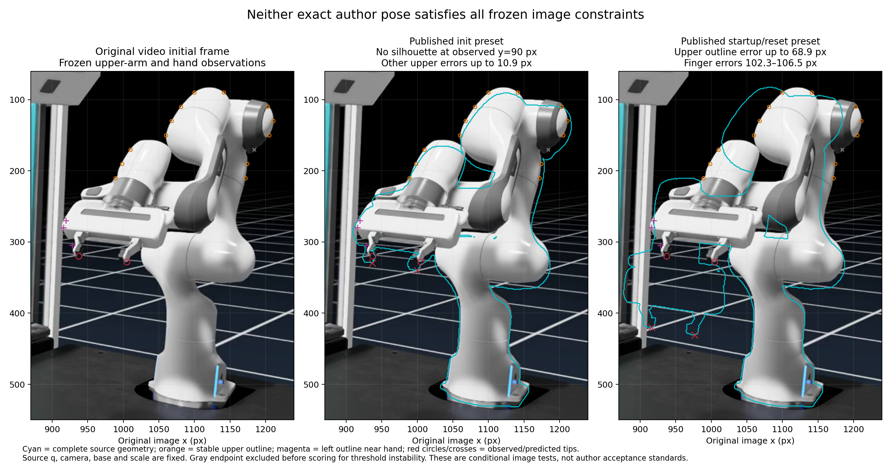

Test the original pose against the whole robot
SCENE ACCEPTANCE STILL OPENThe original hood video provides more than a lower-arm outline. New shoulder, upper-arm and finger observations test whether recovered source geometry and published pose presets agree with the same recorded image.
前一轮固定相机测试：旧的两个肩部姿态假设未通过新增接缝约束。作者 init 姿态更接近原视频，但整臂与指尖仍有偏差；当前结果以固定相机和资产对应关系为前提，不能把偏差单独归因于关节姿态。没有修改场景或启动物理仿真。
New: preserve the author joints, test the camera and base
最新进展：保持作者九个关节值和资产尺度不变，只用原来的 28 个下半身观测拟合四个外参，两种相机下的上臂、手部和指尖都通过了原定局部图像阈值。原相机的拟合重复性未过关，因此没有选定相机，也没有修改原生场景。
Open full-resolution comparison ↗
| Fixed camera hypothesis | Lower fit RMS | Upper maximum | Finger tips | Fit repeatability |
|---|---|---|---|---|
| Prior rail | 3.45 px | 8.64 px | 8.80 / 9.96 px | Failed |
| Independent nominal grid | 3.45 px | 4.96 px | 4.79 / 4.02 px | Passed |
Both fits use the same four free extrinsics, bounds, starts and lower-body objective. No upper-arm, hand, fingertip, shoulder seam or blue-mask measurement is used to fit or select a camera. The prior-camera pair differs by up to 0.407 px in the training residual vector, exceeding the frozen 0.05 px repeatability limit despite nearby costs. The stopped search was not extended. Five near-optimal solutions retain local visual passes, with appreciable fingertip sensitivity. This is not a statistical holdout test or proof of the original camera.
Retained earlier tests under the old fixed camera and base
Retain the previous observations
Open full-resolution figure ↗
Seven seam observations were outside the original 28-point fit. The old 75.32° and −22.98° modes miss the new seam by up to 13.86 and 13.46 pixels. A bounded q1-only diagnostic retains a conditional near-zero hypothesis, but the unchanged blue-mask mismatch remains. The 9 px seam limit is a frozen local diagnostic threshold.
Evaluate both exact author presets
Open full-resolution figure ↗
All nine joint values are read from the published configuration, including q1=0 and 0.0444 rad. Camera, base, mesh scale and geometry remain fixed. Cyan shows source geometry; marked observations precede evaluation. One unstable upper endpoint is retained in the record but excluded before scoring.
| Exact source preset | Upper-arm discrepancy | Finger-tip errors | Result |
|---|---|---|---|
| init | No silhouette at y=90 px; other endpoints ≤10.92 px | 9.73 / 12.84 px | Failed |
| startup / reset | 68.87 px maximum | 102.26 / 106.52 px | Failed |
The unchanged local limits are 9 px for stable upper endpoints and 12 px for each finger tip. Lower-body and shoulder agreement alone cannot establish full-pose agreement. Source-joint axes and anchors match the recovered native asset; independent chain arithmetic checks pass.
What remains unresolved
Init is substantially closer, with a systematic upper-arm/hand displacement. Camera calibration, original asset identity and actual video joint state remain confounded. The independent ground-grid check and lower-only extrinsic comparison above now show that the mismatch can decrease without changing the author joint values. Original camera identity, metric relation to the hood and collision-free task initialization still need evidence. No collision or native trial is admitted by these image checks.
Download complete pose comparison and figure hashes · Original source video